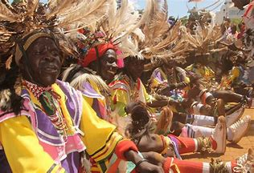

Le Kenya, en forme longue la république du Kenya (en swahili : Kenya et Jamhuri ya Kenya, en anglais : Kenya et Republic of Kenya), est un pays d’Afrique de l'Est.
Il est limitrophe du Soudan du Sud au nord-ouest, de l’Éthiopie au nord, de la Somalie à l’est, de l’Ouganda à l’ouest et de la Tanzanie au sud-sud-ouest. Il est baigné par l’océan Indien au sud-est.
le pays est connu pour ses safaris car possedant l'un des plus beau parc national africain le Parc National du Lac Nakuru
le mont kenya
Le mont Kenya, dont le nom signifie « montagne de l'autruche » chez les Wakamba, l'une des populations vivant à son pied, est le point culminant du Kenya et le deuxième plus haut sommet d'Afrique, derrière le Kilimandjaro. Les plus hautes cimes culminent à 5 199 mètres à la pointe Batian, 5 188 mètres à la pointe Nelion et 4 985 mètres à la pointe Lenana. Il se situe au centre du pays, juste au sud de l'équateur, à approximativement 150 kilomètres au nord-nord-est de la capitale Nairobi.

les luo du kenya
Selon le recensement de 2009 au Kenya, 4 044 440 personnes sont considérées comme Luo, constituant ainsi le quatrième groupe ethnique du pays, après les Kikuyus, les Luhya et les Kalendjins. Ils représentent 13 % de la population2. Les Luo proprement dits sont 5 200 000, auxquels il faut ajouter les Luo Suba qui sont 75 000[réf. nécessaire].
En Tanzanie, on évalue à 327 000 le nombre de Luo Suba.